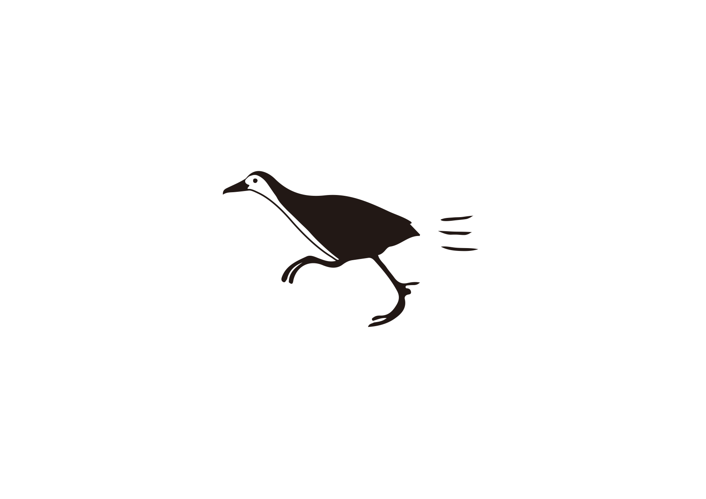

<!-- <!DOCTYPE html> -->
<html>
  <head>
   <script src="https://aframe.io/releases/0.9.0/aframe.min.js"></script>
   <script src="https://raw.githack.com/AR-js-org/AR.js/master/aframe/build/aframe-ar.js"></script>
   <script src="https://rawgit.com/mayognaise/aframe-gif-shader/master/dist/aframe-gif-shader.min.js"></script>
  </head>
  
  <body style="margin : 0px; overflow: hidden;">

    <a-scene embedded vr-mode-ui="enabled:false;" arjs="debugUIEnabled:true; detectionMode: mono_and_matrix; matrixCodeType: 3x3; patternRatio:0.6">

      <!-- <a-assets>
        
      </a-assets> -->
      <a-marker type='pattern' url='pattern-shiroharaAR.patt'>
      <!-- <a-gif src="ARgif.gif"></a-gif> -->

        <a-entity 
        geometry="primitive:plane;"
        material="shader:gif; src:url(./ARgif.gif); color:white; opacity:1">
       </a-entity>
       
        <!-- <a-plane
          position="0 0 0"
          rotation="0 0 0"
          width="1"
          height="1"
          material="shader:gif; src:#front; opacity:1">
        </a-plane> -->

      </a-marker>
      <a-entity camera></a-entity>
    </a-scene>
  </body>
</html> 


<!-- イーハトーヴォの巻 -->
  <!-- <body style="margin: 0px; overflow: hidden;">
    <a-scene embedded arjs>
      <a-marker type="pattern" url="pattern-shiroharaAR.patt">
        <a-box position="0 -1 0" scale="1 1 1" color="grey"></a-box>
        <a-text
        value="イーハトーヴォ"
        font="F66ElleminBpetit-msdf.json"
        font-image="F66ElleminBpetit-msdf.png"
        negate="false"
        scale="2 2 1"
        position="0 1 -4"
        color="black"></a-text>

      </a-marker>
      <a-entity camera></a-entity>
    </a-scene>
  </body> -->
